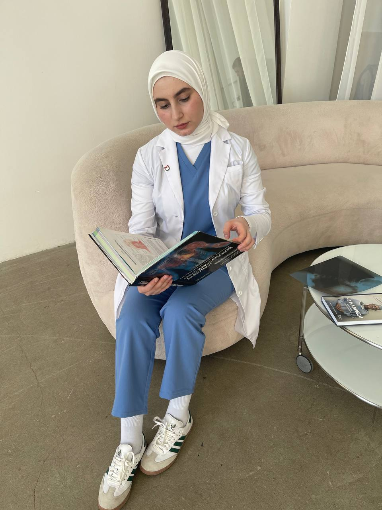

врач · эндоскопист

Смотрит внутрь пациентов профессионально. Внутрь себя — крайне неохотно.
ЭГДС · Колоноскопия · Приём по записи
Хава располагает к разговору — но по делу, без светской беседы. Она пришла лечить, а не дружить.
Мизинцы у неё кривые.
Диагнозы — нет.
Практика началась задолго до диплома: разбиралась с обидчиками младшего брата на месте, без записи. Дважды с ним не связывались.
Был случай — её увозили из метро прямо в отделение полиции. Что произошло, не уточняет.
Плотный интроверт.
Социофоб по призванию.
Социальная батарея —
вечно на нуле.
Без иронии
Первый рабочий день Хавы прошёл на скорой. В этот же день она потеряла пациента — спасти не получилось.
С того дня она не работает «примерно». Цена ошибки здесь реальна с первого дня.
Любимый цветок — подсолнух. Пока они в моде. Что будет после смены тренда, история умалчивает.
Специалист, которому лучше не мешать и не звать на светские мероприятия. Прогноз благоприятный.